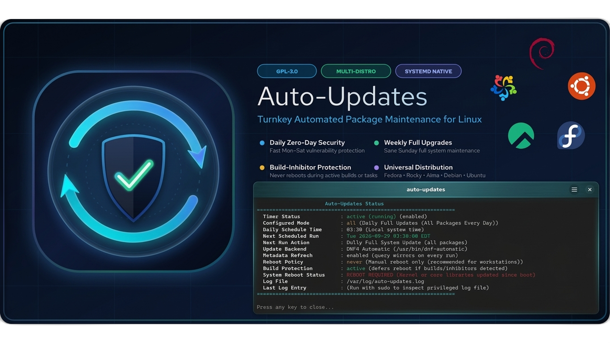
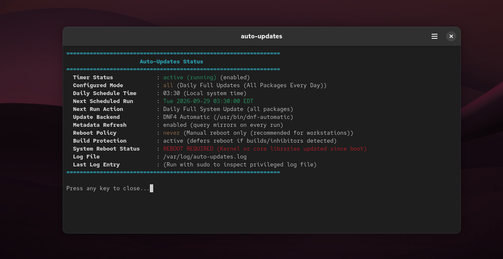
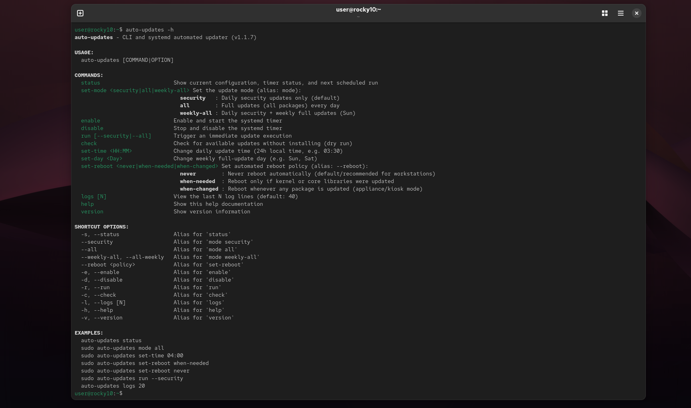
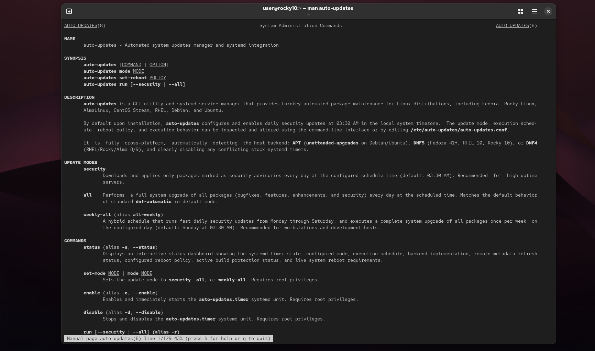

Auto-Updates
Turnkey automated package maintenance, zero-day CVE patching, compiler-aware reboot protection, and unified multi-distribution management for Linux.




Scroll for more images →
The "UFW" for Linux Package Maintenance
Linux distributions have long shipped raw update automation engines—such as dnf-automatic on RPM systems and unattended-upgrades on Debian and Ubuntu. Yet on millions of Linux servers and developer workstations, automatic updates are left disabled or half-configured out of fear: fear of unannounced middle-of-the-night reboots, fear of broken daily upgrades, or simply the friction of juggling disparate config files, cron entries, and systemd overrides.
Auto-Updates provides an intelligent, human-friendly management layer that brings turnkey reliability to Linux maintenance. What ufw did for iptables, auto-updates does for package automation—delivering unified CLI semantics, zero-configuration defaults, real-time observability, and smart compile-time protection across enterprise and community Linux.
Key Features
- Unified Multi-Distro CLI: Control your update policies with the exact same commands across Rocky Linux 10, AlmaLinux 10, Fedora 44, Debian 13, and Ubuntu 26.04 LTS.
- "Goldilocks" Hybrid Schedule (
weekly-all): Applies fast, low-risk zero-day security CVE patches Monday through Saturday, then performs a full system upgrade on Sunday at 03:30 AM. - Build & Compiler Protection: Never lose an overnight compile or training run. Intelligently scans for active build processes (
gcc,cargo,make,ninja,rpmbuild,containerd) and system inhibitor locks before any reboot. - Instant Observability Dashboard: Run
auto-updates statusfor immediate, color-coded visibility into systemd timers, next scheduled action, active backend (DNF5 / DNF4 / APT), and reboot state. - Granular Reboot Policies: Configure reboots with full clarity using
never,when-needed(reboots only when kernel or glibc patches mandate it), orwhen-changed. - Safe Dry-Run Auditing: Inspect pending updates non-destructively at any time using
auto-updates check. - Zero-Config Turnkey Activation: Automatically coordinates systemd timers upon package installation, resolving and disabling conflicting stock distro timers out-of-the-box.
- Native Desktop & AppStream Cataloging: Fully cataloged in GNOME Software and KDE Discover with rich 1080p hero banners, multi-screenshot galleries, and desktop app integration.
Comparative Analysis
How auto-updates compares against raw, low-level distro automation utilities:
| Capability | Raw dnf-automatic | Raw unattended-upgrades | Auto-Updates |
|---|---|---|---|
| Turnkey Activation | Manual timer & conf editing | Varies by distribution | Active on install (03:30 AM) |
| Multi-Distro CLI | RPM only | APT only | Unified across RPM & DEB |
| Hybrid Weekly Mode | Requires custom scripts | Requires cron/script hacks | Native weekly-all schedule |
| Status Dashboard | Complex journalctl parsing | Inspect raw log files | auto-updates status |
| Build & Compile Protection | Blind reboot | Blind reboot | Detects build locks & defers |
| Safe Dry-Run Audit | Complex flags | Complex flags | auto-updates check |
| Schedule Adjustment | Systemd timer drop-ins | Systemd / cron overrides | sudo auto-updates set-time |
Management CLI Commands
The installed auto-updates utility provides complete administrative management and configuration:
# Inspect real-time status, timers, backend, and reboot state:
auto-updates status
# Configure update schedule (security, all, or weekly-all):
sudo auto-updates set-mode weekly-all
# Set intelligent reboot policy (never, when-needed, when-changed):
sudo auto-updates set-reboot when-needed
# Adjust daily execution schedule time:
sudo auto-updates set-time 03:30
# Perform a safe, read-only dry-run check:
auto-updates check
# Trigger an immediate manual update run:
sudo auto-updates run
# View comprehensive Unix manual page:
man auto-updates